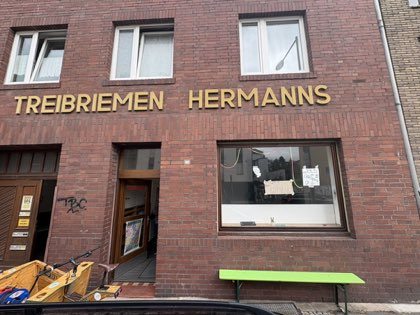
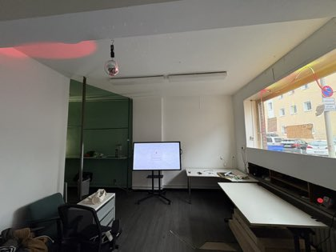
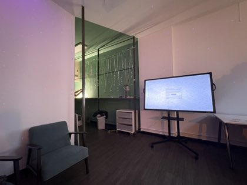

Hackspace in Bonn · Dorotheenstraße 101 · freitags ab 20 Uhr
⚑
╱ ╲
╱ ╲
╱ ╲
___╱ ╲___
╱ ╲
╱ │ │ │ │ │ │ │ │ ╲
╱__│_│_│_│_│_│_│_│__╲
│ ╱───╲ │
╰───────╯ ╰───────╯
b i t c i r c u s 101
bitcircus101 will der Tech- und IT-Treffpunkt in Bonn sein — für Leute, die Dinge wirklich verstehen wollen. Open-Source Software, Datensouveränität, IT-Security, Reverse Engineering, alte Hardware, Löten, KI-Projekte und LLMs — alles hands-on, nichts Hochglanz.
Reinschauen kostet nichts außer Neugier. Kein Anmelden, kein Mitgliedsantrag, kein Elevator Pitch. Einfach Freitagabend vorbeikommen. Privat und nicht-kommerziell, kein Verein.
Dorotheenstraße 101, 53113 Bonn
50.74042° N · 7.08942° E ·
Karte öffnen ↗
Bonner Altstadt · ÖPNV-nah · ca. 15 Minuten zum Hauptbahnhof



Jeden Freitag ab 20 Uhr — einfach vorbeikommen, kein Vorwissen nötig.
Jeden dritten Freitag: linkup@bitcircus101 — kurze Talks, 3 Folien, 3 Minuten, danach quatschen. Thema: was dich gerade beschäftigt.
→ Kalender-Abo ↗ · ICS ↗ · RSS-Feed · Alle Termine
Miete, Strom, Internet werden komplett von der Community getragen — kein Verein, keine Förderung, kein Backup. Helfen geht auch ohne Geld: vor Ort anpacken (putzen, Leergut, Wäsche, Getränke), bei größeren Vorhaben (Rolladen, Akustikpanele) oder bei Terminen mit Hand anlegen.
Einmalige Anschaffungen zeigen einen Balken bis zum Ziel; laufende Kosten fallen Monat für Monat an. Stand 10.07.2026; Live-Werte auf der Unterstützen-Seite.
☀ Solarzellen + Speicher · einmalig · Solarstrom fürs ganze Jahr
250 € / 2.000 € · noch 1.750 €
⇅ Schnelleres Internet · laufend · Glasfaser für den Space
30 € / Monat — werde Unterstützer:in
Du kannst den ganzen Raum auch selber nutzen — für Workshops, Meetups, Schulungen, Hackathons oder Drehs. Frag einfach per E-Mail. Details → Raum nutzen